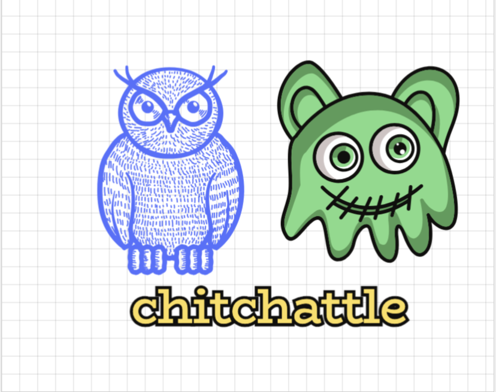

Hi!! I'm Daniel Gray, a versatile software developer with a Physics degree from Columbia University (2011) and a Master's degree in Computer Science from NYU (2022). Not just a web developer, I am a jack of all trades with keen interests in building innovative websites, diving into artificial intelligence, and strengthening cybersecurity(I have completed more cybersecurity challenges than 97% of all users on on TryHackMe) I am not only adept at developing my own projects but also an idea man passionate about creating unique user experiences. My project, GothamSonic, exemplifies my commitment to aesthetics and user-centric design.
GothamSonic.com

GothamSonic is a New York City-based community music site that revolutionizes how locals and visitors alike explore the city's vibrant music scene. With a comprehensive concert calendar showcasing a diverse array of venues, the platform invites users to not only discover new music but also share their own by uploading and streaming songs. At its core, GothamSonic is engineered as a Single Page Application (SPA) to ensure a fluid, user-friendly experience. Leveraging React for dynamic frontend interactions and Django REST Framework for robust API development, it offers seamless navigation and real-time updates. The backend is powered by a PostgreSQL database, ensuring efficient data management and scalability. To accommodate user-generated content, such as song uploads, the site utilizes Amazon S3 for secure storage, enhanced by a Content Delivery Network (CDN) for optimized content delivery. Hosted on the Amazon Cloud with Apache, GothamSonic embodies my dedication to harnessing cutting-edge technology to enrich New York City's musical ecosystem and foster a connected community of artists and music lovers
View on GitHubHackBay.net

HackBay.net, an innovative ecommerce platform, draws inspiration from eBay to offer users an engaging environment for placing simulated bids on a curated selection of hacker-themed toys and gadgets. Built with Python (Django) for server-side logic, styled with CSS, and structured with HTML, HackBay.net marries functionality with aesthetic appeal. The site not only exemplifies my skills in crafting secure, intuitive online marketplaces but also highlights my creativity in conceptualizing unique digital experiences. Through HackBay.net, I aimed to provide a playful yet realistic bidding environment, underscoring my ability to transform traditional web concepts into exciting new ventures.
View on GitHubChitChattle.com
ChitChattle, a dynamic social media platform, showcases my ability to blend Django's robust backend capabilities with the interactive potential of HTML, CSS, and JavaScript on the frontend. Opting for custom-built APIs, I engineered a tailored solution that emphasizes my proficiency in developing efficient, scalable systems without relying on frameworks like Django REST. Utilizing SQLite for database management, ChitChattle provides a seamless user experience, facilitating real-time interactions and content sharing among its community. This project demonstrates my commitment to creating responsive, user-centered applications that leverage the full spectrum of web development technologies.
View on GitHubQuestion Answerer == IBM watson-like question and answering system

In the CS50AI course's 'Questions' project, I developed an AI that answers questions by analyzing a set of documents to find relevant answers. This project leveraged a language model to process and understand natural language, enabling it to parse text, identify key information, and generate accurate responses. Through implementing techniques like tokenization, part-of-speech tagging, and named entity recognition, the AI demonstrates the practical application of NLP (Natural Language Processing) principles to create a sophisticated question-answering system.
View on GitHub